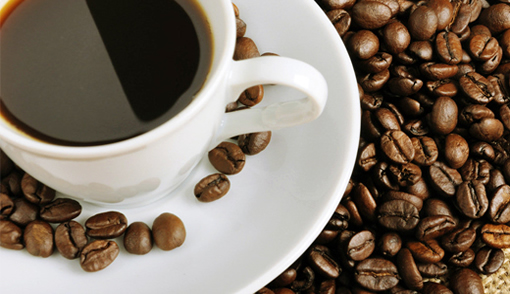

|  |
---------------------------------------------------------- <浓缩咖啡/意大利咖啡/浓咖啡/Espresso>：受压的蒸气直接通过咖啡粉，得到的液体就叫浓缩咖啡。它属于纯粹的咖啡，也是其他咖啡饮料的基底。 <美式咖啡/清咖啡/Americano>：1份浓缩咖啡+2份水。 <白咖啡/Flat White>：1份浓缩咖啡+1.5份热牛奶。 <玛琪雅朵/玛奇朵/Macchiato>：1份浓缩咖啡+0.5份奶泡。 <康宝蓝/康巴纳/Con Panna>：1份浓缩咖啡+0.5份鲜奶油。 <拿铁/Latte>：1份浓缩咖啡+1.5份热牛奶+0.5份奶泡。 <布列夫/半拿铁/Breve>：1份浓缩咖啡+0.75份热牛奶+0.75份鲜奶油+0.5份奶泡。 <卡布奇诺/Cappuccino>：1份浓缩咖啡+0.5份热牛奶+1.5份奶泡。 <摩卡/Mocha>：1份浓缩咖+1份热牛奶+0.5份巧克力酱+0.5份鲜奶油。 |